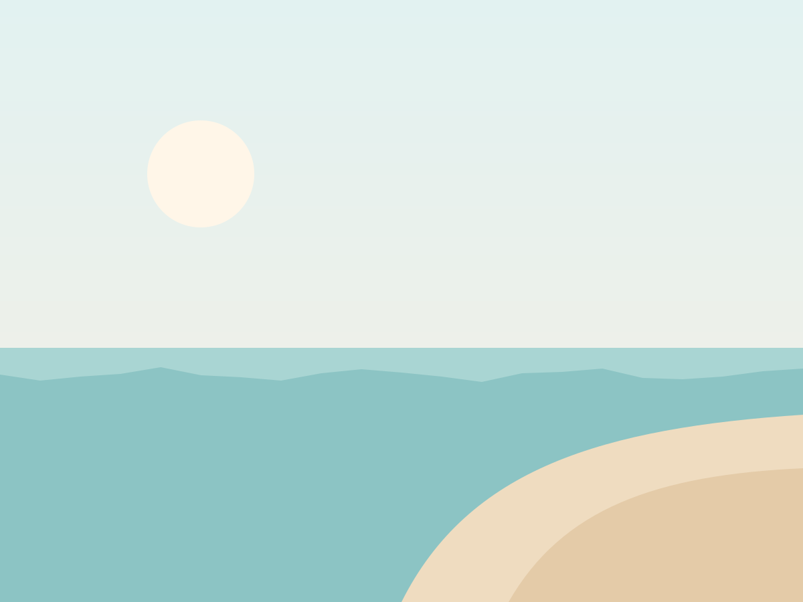

Atlas IA · préparation du voyage
Une grève est annoncée le 14 mai sur la ligne Nice – Gênes. J'ai trouvé un car direct à 10 h 05 qui garde votre programme intact ; Lucia l'a déjà validé.

Départ dans
Train de nuit · voiture 12,
jours · heures · minutes
Train de nuit · voiture 12,
couchettes 41 et 42
Météo à l'arrivée
moyennes de maiNice☀️sec et doux22°
Gênes⛅brise de mer21°
Vernazza☀️eau à 18°23°
Levanto🌦averse possible20°
Le parcours
1 140 km en trainBudget du voyage
2 840 € tout compris2 840 €
TrainsHébergementsRepasActivités
Valise
4 sur 7- Passeports
- Maillots de bain
- Chaussures de marche
- Adaptateur… inutile en Italie !
- Carnet et stylo
Programme
- J1 · Train de nuitParis-Bercy 21 h 42 → Nice 8 h 55
- J3 · GênesLeçon de focaccia chez Lucia
- J5 · Sentier côtierMonterosso → Vernazza, 2 h de marche
- J8 · RetourÉchange des carnets entre voyageurs
Bon à savoir
Bagages dans le train de nuit
Une valise et un sac par personne. Les valises se rangent sous la couchette du bas.
Repas compris
Les petits-déjeuners et trois dîners. Les autres repas sont libres, Lucia a une liste d'adresses.
En cas de retard
Votre guide est prévenue en temps réel et adapte le programme du jour.